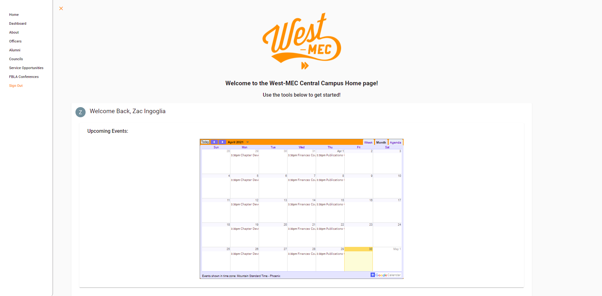

Skills & Abilities
 Hairstyling Record Keeper Web Site
This site was made to replace a paper and pencil records management
system for West-MEC's Hairstyling program. It allows students to
record information about clients and then allows teachers to review
and grade students based on their records.
Hairstyling Record Keeper Web Site
This site was made to replace a paper and pencil records management
system for West-MEC's Hairstyling program. It allows students to
record information about clients and then allows teachers to review
and grade students based on their records.

Central Campus FBLA Web Site
This is a site I developed to aid West-MEC Central Campus's Coding
program in a multitude of tasks. The site was designed, primarily,
as a way for students to quickly access information about upcoming
program and volunteer events. As a secondary function, the site also
gives info about different classroom personnel as well as FBLA
program events and competitions.
 ACA In Adobe Illustrator
I've been using both Illustrator and Photoshop for the last 3-4
years and I became certified in Illustrator by Adobe about 2 years
ago to further prove my skills in this area. I have the capabilities
to design advertising graphics, create clean mockups, create high
quality renders of images, and so much more thanks to what I've
learned in the entire Adobe suite over the past few years.
ACA In Adobe Illustrator
I've been using both Illustrator and Photoshop for the last 3-4
years and I became certified in Illustrator by Adobe about 2 years
ago to further prove my skills in this area. I have the capabilities
to design advertising graphics, create clean mockups, create high
quality renders of images, and so much more thanks to what I've
learned in the entire Adobe suite over the past few years.
From Acclaim: "The Adobe Certified Associate (ACA)
certification is the industry-recognized validation of one’s skill
in Adobe Illustrator CC. This certification requires in-depth
knowledge of setting project requirements, understanding the Adobe
Illustrator CC interface, as well as creating digital graphics and
illustrations using Adobe Illustrator CC."
 OSHA 10 Hour Certification
From OSHA: "The OSHA Outreach Training Program
provides workers with basic and more advanced training about common
safety and health hazards on the job. Students receive an OSHA
10-hour or 30-hour course completion card at the end of the
training."
OSHA 10 Hour Certification
From OSHA: "The OSHA Outreach Training Program
provides workers with basic and more advanced training about common
safety and health hazards on the job. Students receive an OSHA
10-hour or 30-hour course completion card at the end of the
training."